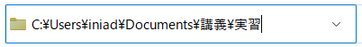
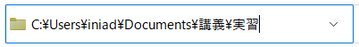

ファイルとはデータそのもの。世界には様々な種類のファイルがあります。
文字が書き込まれたファイルや、動画ファイル、画像ファイル、プログラムが書かれたファイル...
例えば、一口に動画ファイル、画像ファイルと言っても、実際にはそれぞれに様々な形式（フォーマット）のファイルが存在します。

拡張子は、ファイルの種類を示す役割を持っており、これを確認すれば、
そのファイルがどんなファイルなのか分かるようになっています。

拡張子は、ファイルの名前と.（ドット）で区切られており、.（ドット）以降の部分が拡張子と呼ばれる部分、
すなわちファイルの種類を示す部分です。
パソコンは拡張子によってそのファイルがどんなファイルであるか判断し、
クリックしたときに対応したアプリケーションで開くことができる様になっています。
ファイル名を書き換える際に、拡張子も変更することができますが、前述の通り拡張子を変更するとパソコンがファイルを正しく
認識できなくなり、開けなくなってしまう可能性があるので、ファイルの名前を変更する際は気を付けましょう。
また、拡張子が書き換えられたり、消されたりすると以下のような忠告バナーが出るので、「いいえ」をクリックして変更を中断し、
改めて「.」の前の部分だけを変更しましょう。
下記ページで代表的な拡張子の紹介をしているよ！拡張子を知ってQUIZに挑戦しよう！
拡張子QUIZ!
コンピュータは大量のファイルやプログラムからなり、多種多様なプログラムやファイル
を管理するために、「階層構造」が実現されている。
パソコンを使っていくうえでも、この階層構造の考え方に基づいてファイルを管理していれば、
ファイルが溜まってきてもすぐに見つけ出すことができます。
階層構造とは端的に言うと、フォルダの中にフォルダを作ることで細かく分類して管理することです。
フォルダは、ディレクトリとも呼ばれ、フォルダやファイルを格納することができる入れ物で、
エクスプローラ内やデスクトップで以下の操作をすることで作成することができます。
・空白にカーソルを置いてマウス右クリック -> 新規作成 -> フォルダー
・[ctrl]と[shift]を押しながら、[N]キーを押す（ショートカットキー）
フォルダの中にフォルダがある事で階層が形成されるため階層構造と呼ばれますが、
一つのフォルダから木の枝分かれの様にフォルダやファイルが広がっていく事から、ツリー構造とも呼ばれます。
以下では階層構造を持つフォルダの一例とともに、パソコンにおける階層構造の用語について解説します。

階層構造では以上のように、講義フォルダの中に数学フォルダがあることを、
「講義フォルダの下に数学フォルダがある」と表現します。
また階層構造において、ファイルの場所はフォルダの階層構造を巡る「パス」で指定され、
例に挙げた階層構造のファイルについてパスを列挙すると以下の様になります。
講義/数学/第一回.txt
講義/数学/第二回.txt
講義/メモ.txt
※講義/国語 の下はフォルダの内容を省略しているのでパスの詳細は不明
ただし、環境によってはパスの区切り記号に逆スラッシュや円記号が使われる場合もあります。
 

エクスプローラで上部に表示される、現在開いているフォルダの場所を示すバーでは、
普段は人間が理解しやすいように「>」が区切り文字として使われていますが、
右の「ˇ」をクリックすることで、円記号「¥」を区切り文字に使うWindowsのパス表記に切り替わり、
この画面では直接パスを指定することで目的のフォルダに移動することができます。
下記ページから、想定されたフォルダを作ることができるか挑戦してみよう！
階層構造演習ページ